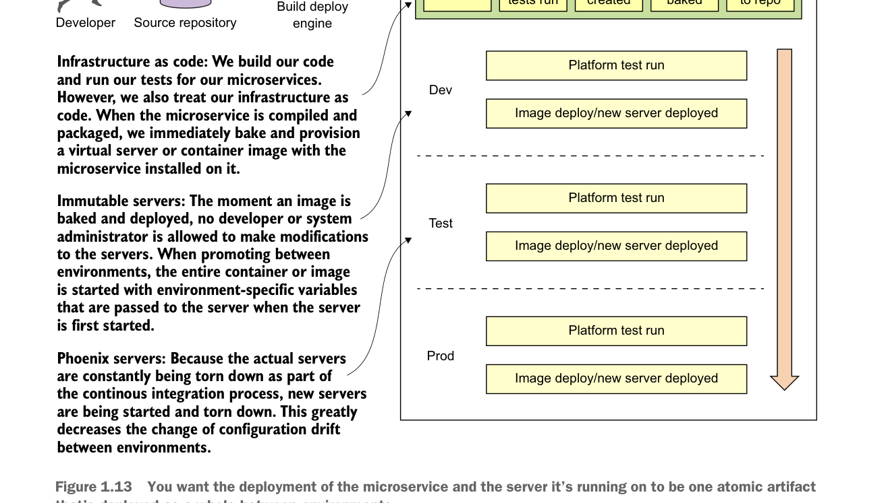

Mọi thứ bắt đầu khi một nhà phát triển đưa mã của họ vào kho kiểm soát mã nguồn. Đây là tác nhân kích hoạt để bắt đầu quy trình build/triển khai.

Bạn muốn việc triển khai microservice và máy chủ mà nó chạy trên đó là một artifact nguyên tử được triển khai như một thể thống nhất giữa các môi trường.
Mục tiêu của chúng ta với các mẫu và chủ đề này là phát hiện và loại bỏ triệt để hiện tượng configuration drift càng nhanh càng tốt trước khi nó ảnh hưởng tới các môi trường cao hơn của bạn, chẳng hạn như stage hoặc production.
1.10 Sử dụng Spring Cloud trong việc xây dựng microservice của bạn
Trong phần này, tôi giới thiệu ngắn gọn các công nghệ Spring Cloud mà bạn sẽ sử dụng khi xây dựng microservice của mình. Đây là tổng quan cấp cao; khi bạn sử dụng từng công nghệ trong cuốn sách này, tôi sẽ hướng dẫn chi tiết về từng công nghệ khi cần.